Portfolio
Examples of our work
26 case studies from hospitals, schools, colleges, libraries, council offices and listed buildings across the West Midlands and Worcestershire. Choose a project to see the photos and the scope of works.
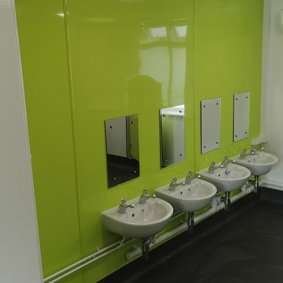
Schools and collegesTemple Meadow Primary SchoolCreation of new toilet facilities Councils, libraries and heritageThe Guildhall WorcesterRefurbishment of existing WC facilities
Councils, libraries and heritageThe Guildhall WorcesterRefurbishment of existing WC facilities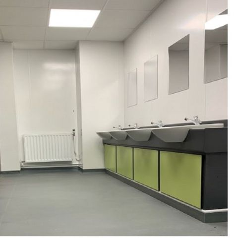
Schools and collegesGeorge Salter Academy6th Form boys' WC refurbishment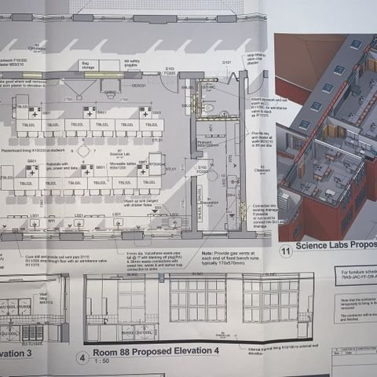
Schools and collegesBlackminster Middle School – EveshamLabs, technology and graphics rooms for Place Partnership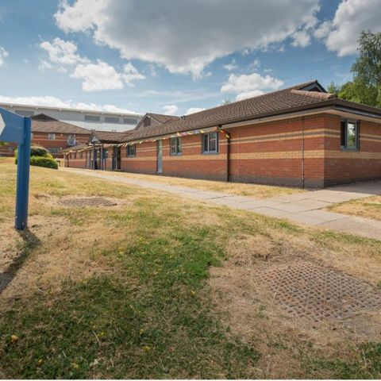
Health and careBushey Fields HospitalInterior fit-out for Kier Services East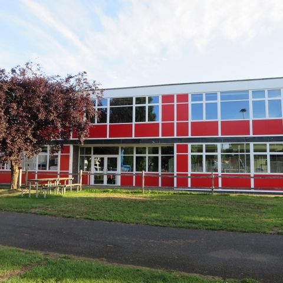
Schools and collegesDe Montfort School – EveshamNew windows, curtain walling and roof for Place Partnership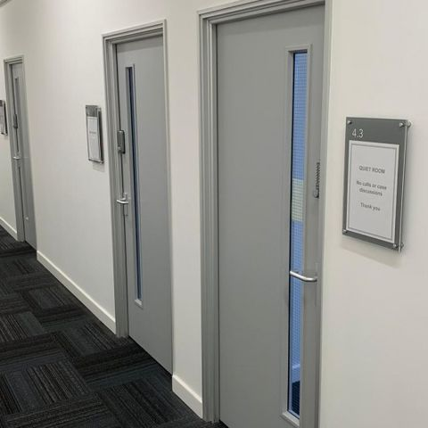
Councils, libraries and heritageBroadgate House, CoventryCoventry City Council, floors 3 to 5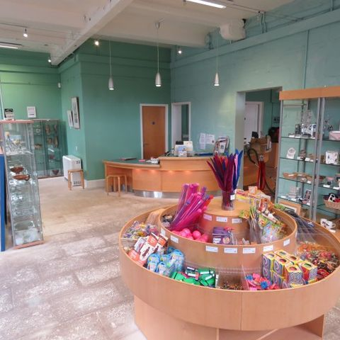
Councils, libraries and heritageThe County Museum – Hartlebury CastleWall repairs and period decoration in a listed museum Schools and collegesPerryfields Primary SchoolRefurbishment of boys' and girls' toilet blocks
Schools and collegesPerryfields Primary SchoolRefurbishment of boys' and girls' toilet blocks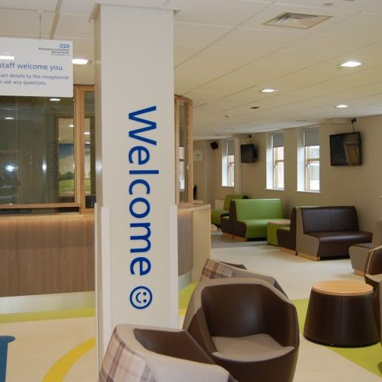
Health and careOrsborn HouseReception, entrance, stairs and lobby refurbishment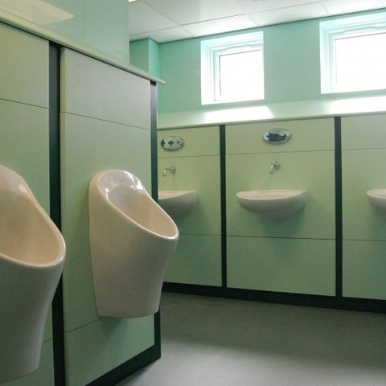
Health and careSandwell Hospital – Hallam RestaurantPublic WCs, as Principal Contractor Schools and collegesWood Green Academy – Science LabsSix science laboratories for Sandwell MBC
Schools and collegesWood Green Academy – Science LabsSix science laboratories for Sandwell MBC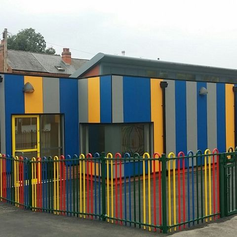
Schools and collegesVictoria Park Academy – Nursery ExtensionNew Rockpanel-clad nursery classroom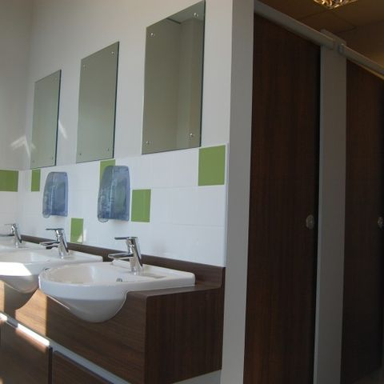
Councils, libraries and heritageSandwell MBC – Council House1st floor female WCs and shower rooms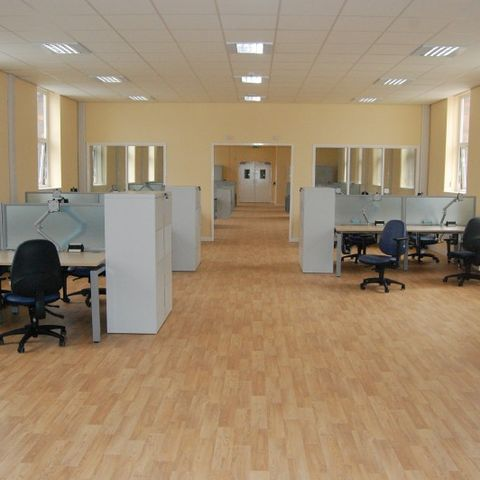
Health and careCity Hospital – D24 OfficesWard refurbished as offices, approx. 450 m² Councils, libraries and heritageWednesbury Town HallGrade II listed: offices, chambers and public WCs
Councils, libraries and heritageWednesbury Town HallGrade II listed: offices, chambers and public WCs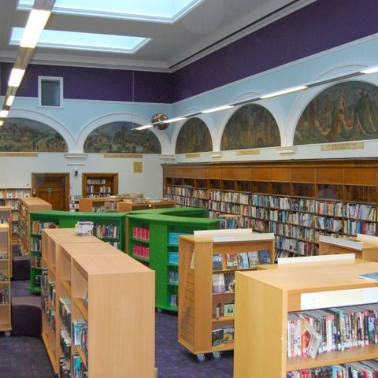
Councils, libraries and heritageSandwell Metropolitan Borough Council – West Bromwich LibraryLending library, children's library and learning centre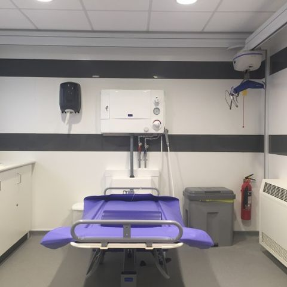
Health and careCherry Orchard Day CentreNew personal care suite and service corridor Councils, libraries and heritageSandwell Metropolitan Borough Council – Smethwick Library320 m² lending library refurbishment in 8 weeks
Councils, libraries and heritageSandwell Metropolitan Borough Council – Smethwick Library320 m² lending library refurbishment in 8 weeks Councils, libraries and heritageWorcester Museum and Art GalleryCouncil offices in a Grade II* listed building
Councils, libraries and heritageWorcester Museum and Art GalleryCouncil offices in a Grade II* listed building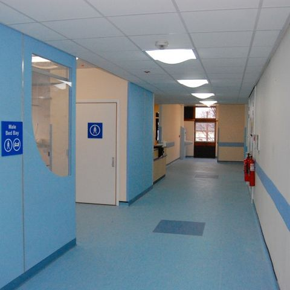
Health and careSandwell Hospital – Surgical Day Unit350 m² ward refurbishment in 6 weeks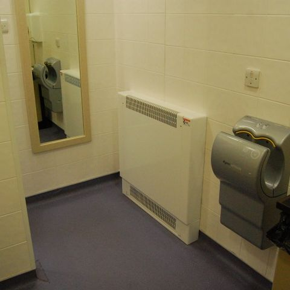
Health and careSandwell Hospital – Public ToiletsMain corridor public toilets Health and careCity Hospital Birmingham – Maternity Department400 m² main corridor refurbishment
Health and careCity Hospital Birmingham – Maternity Department400 m² main corridor refurbishment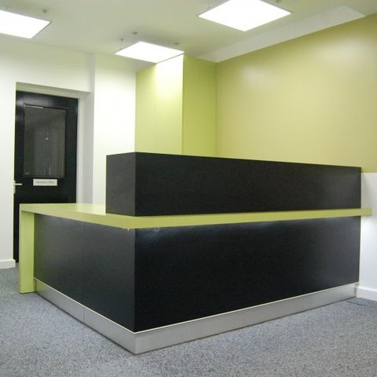
Schools and collegesWindsor High School – Main ReceptionMain reception refurbishment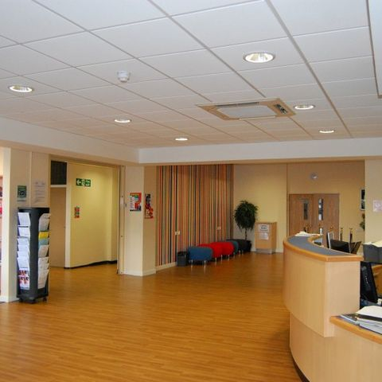
Schools and collegesSouth Birmingham College – Hall Green CampusSummer works to A and C blocks in 10 weeks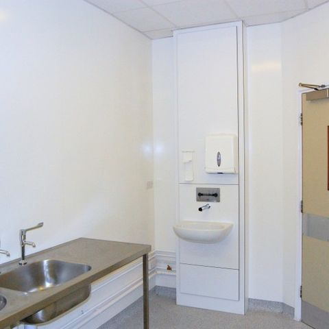
Health and careCity Hospital Birmingham – Ward D5Ward sluice room refurbishment
Talk to us about your project
Whether you have an existing space that requires development, or the creation or conversion of a new space, you can be confident that Hill Interior Contracts Ltd will provide a professional service tailored to each client.